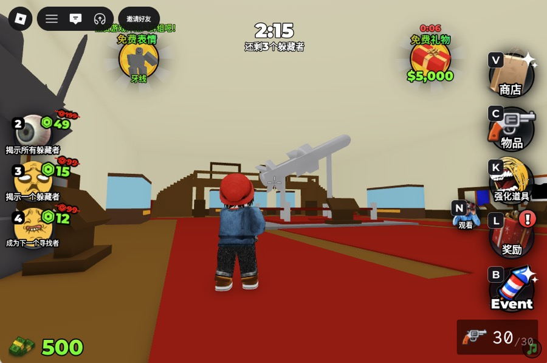
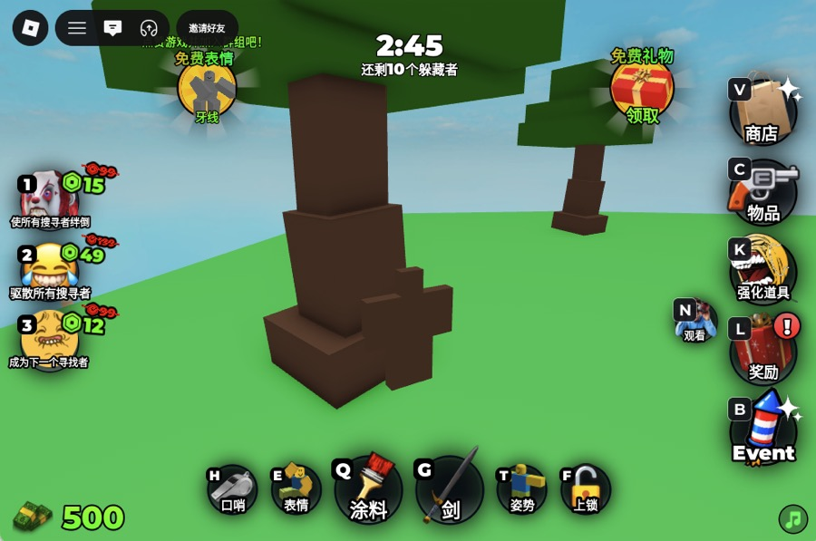
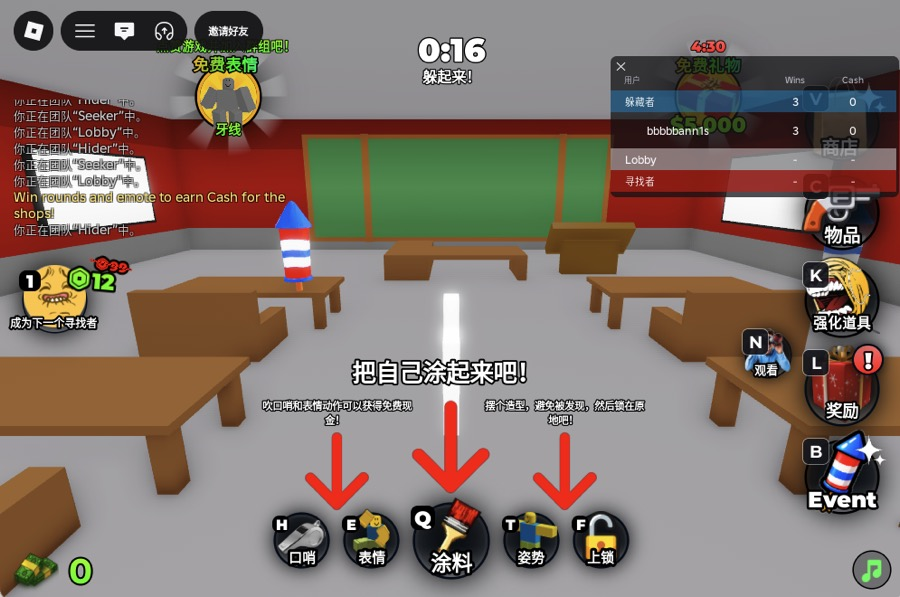

How to play Paint To Hide!
Unofficial fan wiki · facts checked July 7, 2026
One round of Paint To Hide teaches you the loop: hiders paint themselves into the map, seekers hunt, and everyone caught changes sides. Here is the full rule set before your first game.
The round in 30 seconds
A Paint To Hide round splits up to 16 players into hiders and seekers. Hiders get a head start to paint themselves into the map and pick a pose; seekers then sweep the map to catch every hider before the timer ends. Any hider left standing when the clock runs out wins it for the hiding team.
Playing hider: paint the surface, not your taste
Match the surface you are standing against — its color, then its texture. Press up against a wall or prop, copy its tone onto your body, and hold a pose that breaks your human outline. Movement is what gives hiders away, so pick a spot you can commit to for the whole round. The hiding spots guide goes deeper on camouflage and color matching.


Playing seeker: catch and convert
Seekers win by finding every hider before time expires, and each catch makes it easier: caught hiders join the seeker team. That conversion rule means the first two minutes are the hardest — one good early catch starts a snowball. Look for outlines and color seams, not movement; a well-painted hider will not move at all.
Controls and settings that matter
Two features from the official list change how you play.

Shift + P: the hider free cam
Shift + P detaches the camera while you hide. Fly it to where a seeker would stand and grade your own paint job — if you can spot yourself in two seconds, repaint.
Private servers and the free admin panel
Private servers include a free admin panel, per the official page. Custom rounds with friends need no extra purchase to set up and moderate.
FAQ
How many players are in a Paint To Hide round?
Up to 16 players per server, split between hiders and seekers. The Roblox game page lists 16 as the server size; exact team ratios are set by the game each round and can change with updates.
What happens when a hider gets caught?
They switch sides and join the seeker team for the rest of the round. The official description states catches convert hiders into seekers, which is why rounds accelerate toward the end — the last hider standing often faces a double-digit seeker team.